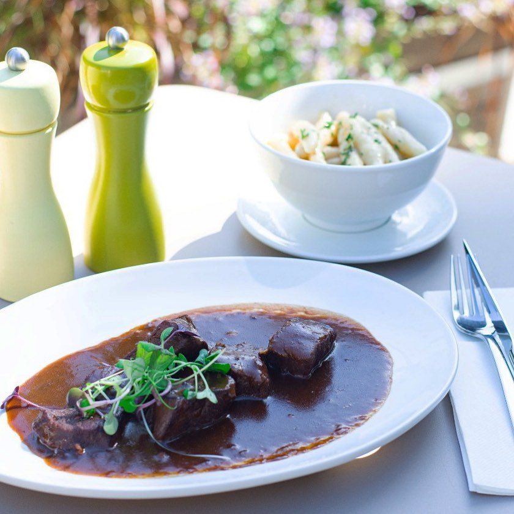

Jelenie ragú podľa @stary_biskupsky_hostinec — Normy Jedál
Keďže vám divina veľmi chutila, rozhodli sme sa ju opäť zaradiť do našej ponuky. Tentokrát sa podávalo Jelenie ragú, tak trošku netradične s bylinkovými šúľancami. 🥩🦌🍷🍴#starybiskupskyhostinec #nitra #nitramichuti #parknasihoti #divina #jelenieragu #domacesulance #pochutka